Part 0: Setup & Creative Prompts
This section documents the DeepFloyd IF setup, text prompt creation, and initial text-to-image generation experiments.
DeepFloyd IF Overview
Creative Text Prompts
Three creative prompts were selected to showcase the model's capabilities:
Selected Prompts
• "a frog eating pizza" - Humorous combination of animal and food
• "a horse walking on the moon" - Fantastical landscape scenario
• "a cat working out in the gym" - Anthropomorphic animal activity
Sample Generations with Inference Steps Comparison
The three prompts were generated with both 20 and 100 inference steps to demonstrate the impact of sampling iterations on image quality:
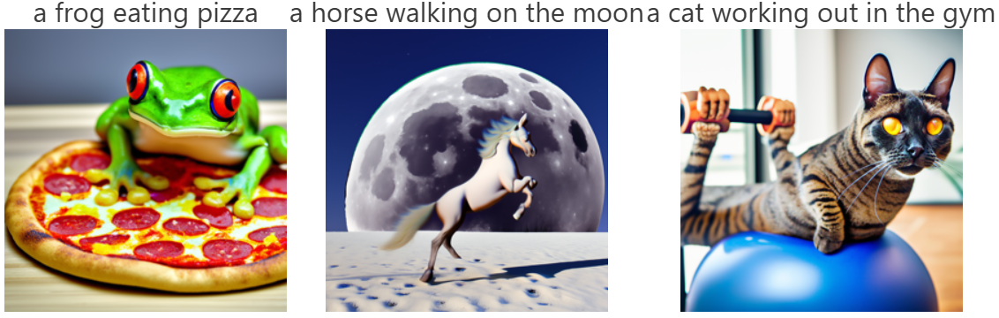
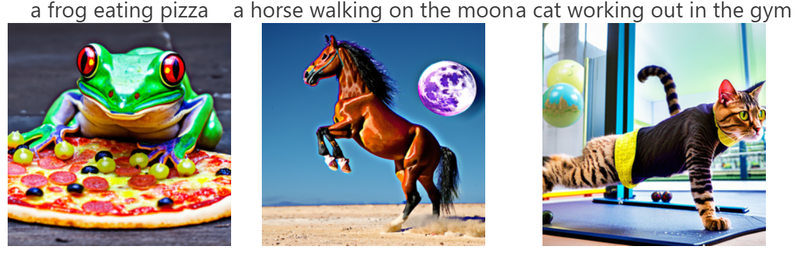
Overall Reflection on Inference Steps
The comparison between 20 and 100 inference steps clearly demonstrates the quality-computation tradeoff in diffusion models. With 100 steps, all three generations show improved detail, clearer subject definition, and smoother texture rendering. The 20-step versions are noisier and less refined but still convey the core concepts of each prompt.
Computational Efficiency Trade-off
Random Seed
Part 1: Diffusion Sampling Loops
1.1 Forward Process
The forward process adds noise to a clean image according to a fixed schedule, transforming it progressively toward pure Gaussian noise.
Noisy Campanile at Different Timesteps
Forward process visualization showing noise progression from t=250 to t=750:
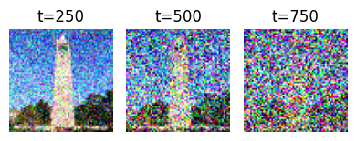
1.2 Classical Denoising (Gaussian Blur)
Attempting to recover the original image using traditional Gaussian blur filtering:
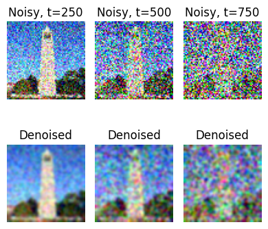
Observation
Classical Gaussian blur is largely ineffective at recovering structured detail from noise. As expected, the higher the noise level (larger t), the worse the results. The blurred images lose all fine details and only recover a blurry outline of the Campanile.
1.3 One-Step Denoising with Diffusion Model
Using a pre-trained diffusion model UNet to estimate and remove noise in a single step:
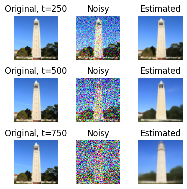
Observation
Even with a single denoising step, the diffusion model dramatically outperforms classical methods. The reconstructed images at t=250 are quite close to the original. Performance degrades gracefully at higher noise levels (t=500, 750), but the tower structure remains recognizable. This demonstrates the power of learning from data.
1.4 Iterative Denoising
Applying multiple denoising steps with a strided timestep schedule (stride=30) for progressive refinement:
Iterative Denoising Process (i_start=10)
Progressive denoising from t=990 to t=0, showing intermediate steps:
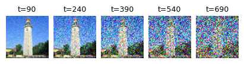
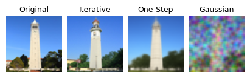
Key Finding
Iterative denoising with multiple steps produces significantly better results than one-step denoising. The progressive refinement allows the model to make better decisions at each stage. The reconstructed image closely matches the original, preserving finer details.
1.5 Diffusion Model Sampling (No CFG)
Generating images from scratch by denoising random noise with no text conditioning:
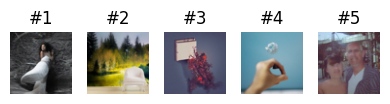
Observation
Without text guidance, the generated images are reasonable but lack strong semantic content. The results look like low-quality photos with some artifacts. This motivates the need for Classifier-Free Guidance to improve quality.
1.6 Classifier-Free Guidance (CFG)
Using both conditional and unconditional predictions to enhance image quality with scale factor γ = 7:
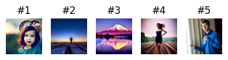
Dramatic Improvement
CFG significantly improves image quality and coherence. The generated images now appear much more realistic and photo-like. While not perfect (64×64 is low resolution), they are substantially better than unconditioned samples. The scale factor γ = 7 provides a good balance between fidelity to the prompt and diversity.
Part 1.7: Image-to-Image Translation (SDEdit)
Using diffusion to "project" images onto the natural image manifold by adding noise and denoising with a text prompt. This follows the SDEdit algorithm.
Campanile with Prompt: "a high quality photo"
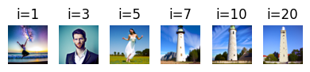
Observation
The parameter i_start controls the degree of "hallucination" applied to the image. Larger values (i_start=20) preserve the original content very closely. Smaller values allow greater stylistic changes while remaining loosely aligned with the original structure. This demonstrates a smooth interpolation between identity and free-form generation.
Custom Cat Image 1 & 2 SDEdit
Two custom cat images edited with varying i_start parameters
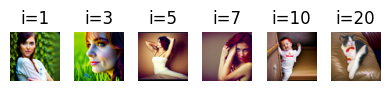
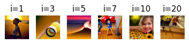
Part 1.7.1: Editing Hand-Drawn and Web Images
Applying diffusion to non-realistic inputs to project them onto the natural image manifold. This procedure works particularly well with hand-drawn images, sketches, and web-sourced images.
Web Image Transformation
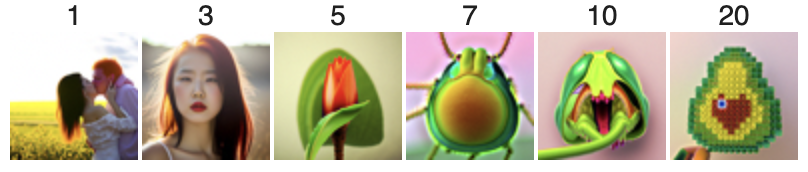
Hand-Drawn Images (2 Sketches)
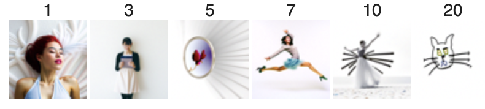
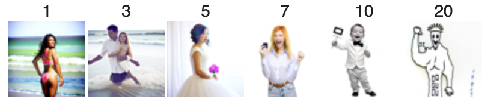
Part 1.7.2: Inpainting
Using diffusion to intelligently fill masked regions while preserving unmasked content. Given an image and a binary mask, we generate new content in masked regions while keeping the unmasked areas intact.
Inpainting Examples
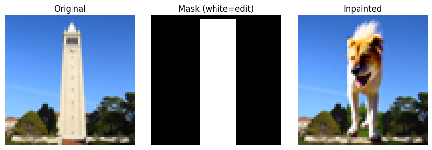
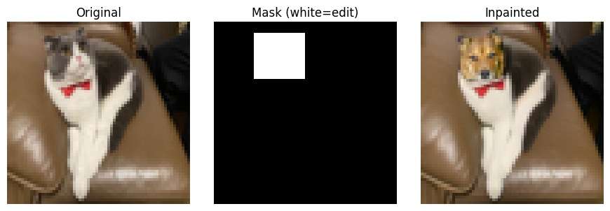
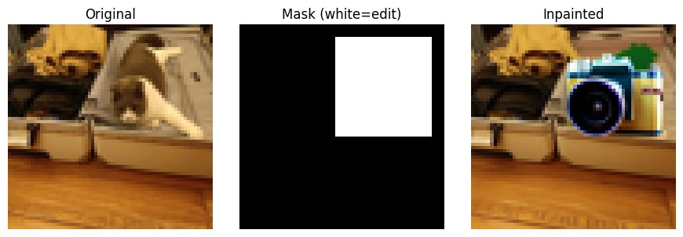
Inpainting Results
The inpainting technique successfully reconstructs interesting (and funny) content in masked regions. The model learns to blend the generated content with the preserved regions. Results vary with different random seeds, providing multiple plausible completions. The quality is limited at 64×64 resolution but demonstrates the core concept effectively.
Part 1.7.3: Text-Conditional Image-to-Image Translation
Transforming images using both the original structure and a custom text prompt. This combines SDEdit with text guidance to enable controlled creative transformations.
Three Custom Text Transformations
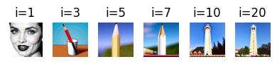
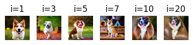
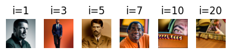
Part 1.8: Visual Anagrams
Creating images that reveal different content when flipped upside down by averaging noise estimates from two different prompts at flipped orientations. This creates optical illusions that exploit the structure of the visual system.
Visual Anagrams (2 Examples)

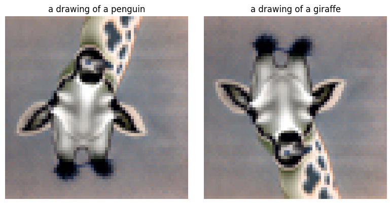
Observation
Visual anagrams successfully encode two distinct images in a single frame. When viewed upright, one interpretation emerges. When rotated 180°, the same pixels are reinterpreted as a completely different subject. This demonstrates the power of diffusion models to find clever solutions in high-dimensional space, exploiting the structure of natural images and our visual perception.
Part 1.9: Hybrid Images
Creating hybrid images using Factorized Diffusion. By combining low-frequency content from one image with high-frequency content from another, we create images that appear different at different viewing distances.
Hybrid Images (2 Examples)
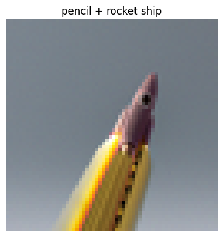
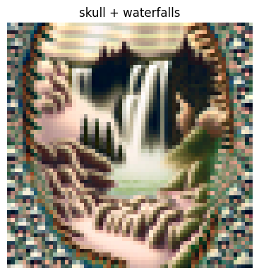
Observation
From a distance, hybrid images appear to show the low-frequency component. When viewed up close or zoomed in, the fine details reveal the high-frequency component. This demonstrates how visual perception decomposes images into frequency bands and how our visual system interprets them at different scales.
Part 2: Bells & Whistles
More Visual Anagrams with Alternative Transformations
Visual anagrams can use transformations beyond vertical flipping. This section implements visual anagrams using two additional transformations.
Anagram with Negatives
Using negatives to reveal different images:
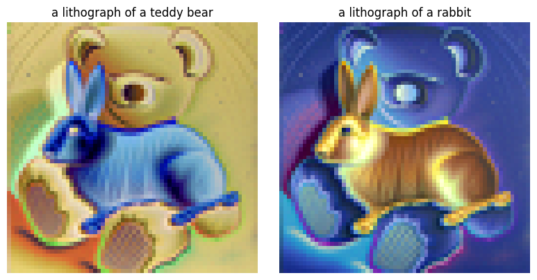
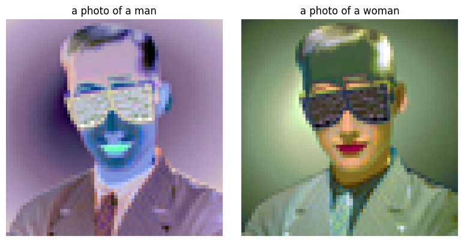
UC Berkeley Course Logo Design
Applying text-conditioned image-to-image translation to create stylized interpretations of iconic logos:
Project Conclusion
🎨 Key Technical Achievements
Diffusion Fundamentals: Implemented and visualized the forward noise process and reverse denoising pipeline.
Sampling Strategies: Compared one-step, iterative, and guided denoising approaches with empirical results.
Text Guidance: Applied Classifier-Free Guidance to substantially improve generation quality.
✨ Practical Applications
Image Editing: Demonstrated SDEdit for style transformation while preserving structure.
Content Synthesis: Used inpainting to intelligently fill masked regions based on context.
Creative Generation: Created optical illusions and hybrid images combining multiple semantic concepts.
Summary
This project provided hands-on experience with state-of-the-art diffusion models. From implementing basic sampling loops to creating creative optical illusions, the work demonstrates both the theoretical foundations and practical applications of diffusion models in generative tasks. The progression from simple noise estimation to complex conditional generation showcases the power and flexibility of this approach.